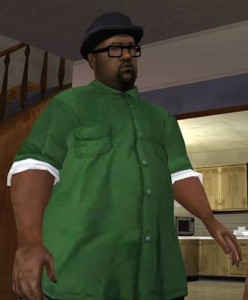

Participante: Santiago Olive

Big Smoke es uno de los personajes más conocidos de Grand Theft Auto: San Andreas. Su nombre real es Melvin Harris y forma parte de Grove Street Families, junto con CJ, Sweet y Ryder. Se caracteriza por ser una persona divertida, habladora y bastante ambiciosa. También es famoso por su gran apetito y por algunas frases y escenas que se volvieron muy populares entre los jugadores.
A lo largo de la historia, Big Smoke tiene una relación cercana con CJ y los demás miembros de Grove Street. Sin embargo, sus decisiones y su deseo de obtener poder y dinero hacen que su papel en la historia cambie considerablemente. Es uno de los personajes más importantes de la trama y participa en varios momentos clave del juego.